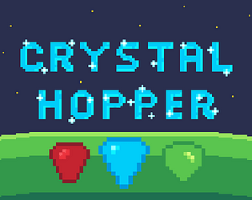
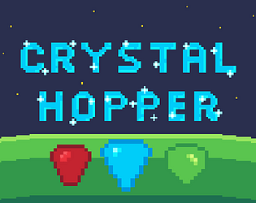
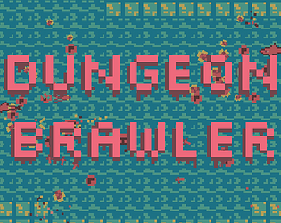
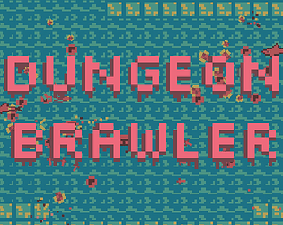
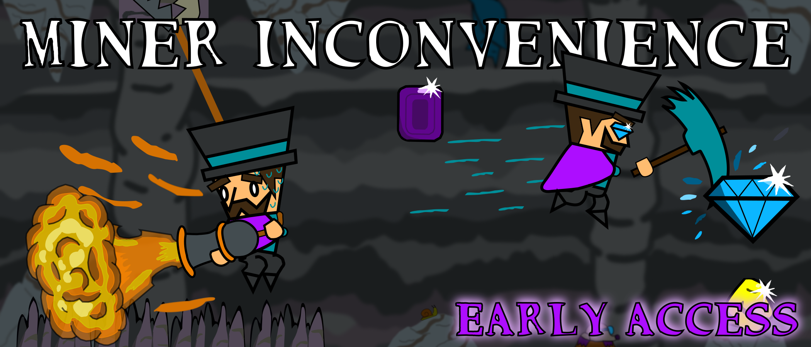
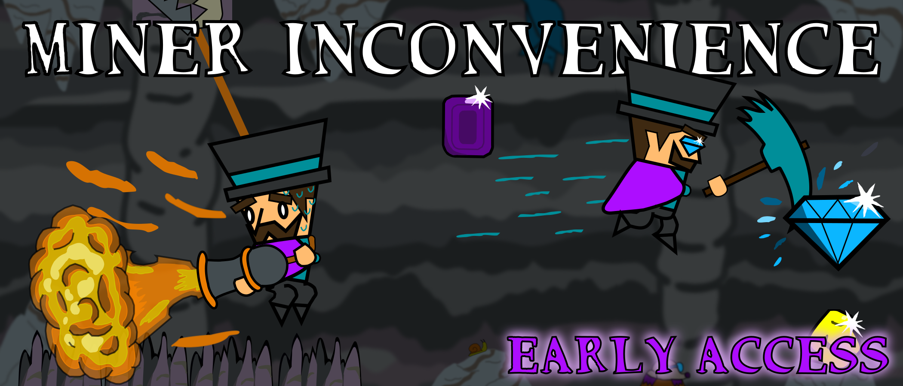

Platformer where you use slingshot movement to collect the crystals. My most ambitious project to date, having spent nearly two years in development it offers lots of mechanics and gameplay. Though most of that time this project was on the backburner while working on school or other projects. Developed in C++ using the Chili DirectX Framework, with help from a musician and several testers. Started 12-14-2018, released on 11-4-2020. (Link to repo)
 

Arcade bullet hell local co-op dungeon crawler. A lot of time was spent tweaking player controls, balancing difficulty scaling, and making juicy interactions. Being my first released game built using GameMaker, I was still grappling with the software so I learned a lot along the way. Started 12-18-2019, released on 5-30-2020. (Link to repo)
Top down puzzle/relaxation game. I wanted to make a game using my favorite "tile graphics" since I haven't done one like this in a while. It started out as an action game with a light/fog of war mechanic, which ended up repurposed for the final version. I was taking a level design class at the time so I used this project to apply what I was learning there. Additionally I made it a priority since it was such a small scale project to make the code as clean as possible. Made in C++ using the Chili DirectX Framework. Development started on January 17th, 2020, and released on February 21, 2020. (Link to repo)
 

Project developed over three semesters with a team of a few dozen people varying each time. I worked mostly on code through the duration of the project. Project was done in Unity. (Private repo)
Made in a few days for the ScoreSpace Jam with the theme of combining. I initially had trouble with the theme but eventually settled on an idea I was happy with. Made with JavaScript and HTML5 canvas. (Link to repo)
Gamejam game made in a couple weeks for lowrez jam, which meant it had to be 64x64 resolution. I started out with a management game where you cook and serve food but ended up pivoting, it ended up as a top down dungeon crawler focused on resource management and dungeon exploration. Made in JavaScript and HTML5 canvas. (Link to repo)
Top down local co-op puzzle game about rearranging train tracks. Made in JavaScript in a few days for Multiplayer Jam with the theme of desert. (Link to repo)
Racing game made in Unity for GMTK Jam 2020 with the theme Out of Control. For this game I designed a different AI to drive each of 8 cars. (Link to repo)

Made in a week for UDC Jam 11, with the theme being Space. As I was working with a teammate we used Unity. This project required a lot of AI work for each of the three bosses and their multiple phases. (Link to repo)
Made in a couple days for GMTK Jam 2019, theme Only One. Made in C++ using the Chili DirectX Framework, this project focused on dynamic level loading and state management. (Link to repo)